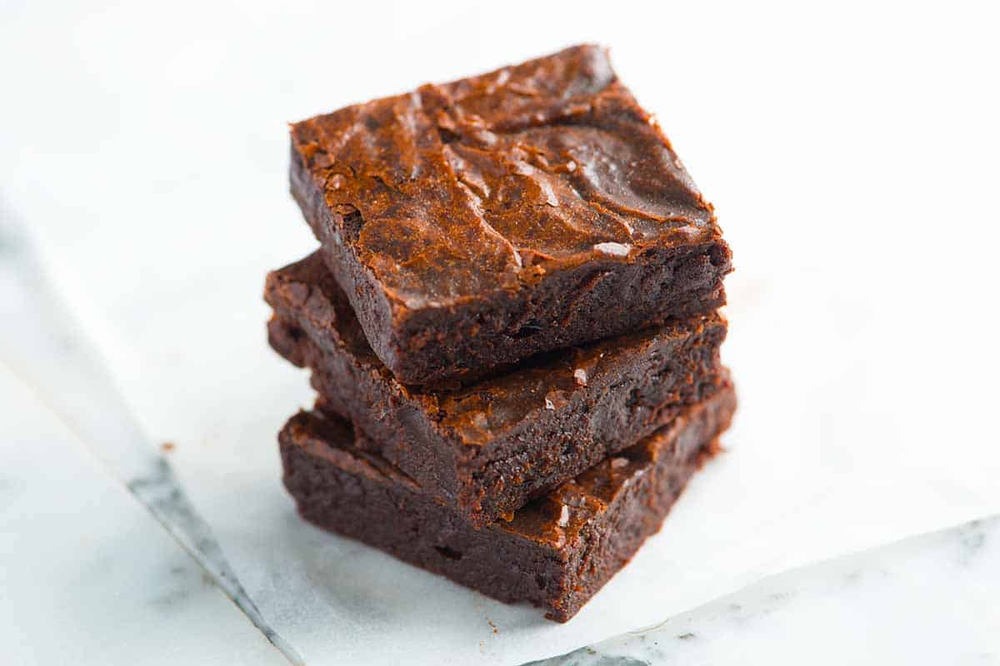

Brownie
This simple, fudgy brownies recipe might be the best you have ever tried. With a rich chocolate flavor, crackly top, and dense, gooey center, these brownies are quick to make and perfect for any chocolate lover.
Ingredients
- 1 ½ cups unsalted butter
- 3 cups white sugar
- 2 teaspoons vanilla extract
- 7 eggs, beaten
- 1 ¼ cups all-purpose flour
- 1 ¼ cups unsweetened cocoa powder
- 1 teaspoon salt
- 1 pound chopped walnuts
Steps
- Preheat oven to 350 degrees F (175 degrees C)
- In a saucepan over medium-heat, melt butter. Stir in sugar until dissolved.
- Remove mixture from heat. Gradually pour melted butter into beaten eggs, whisking constantly, until mixture is fully incorporated. Stir in vanilla.
- Sift flour, cocoa, and salt together. Add flour mixture to butter mixture, mixing until combined. Stir in walnuts. Spread batter into the prepared pan.
- Bake in preheated oven until brownies are set, 45 to 50 minutes.